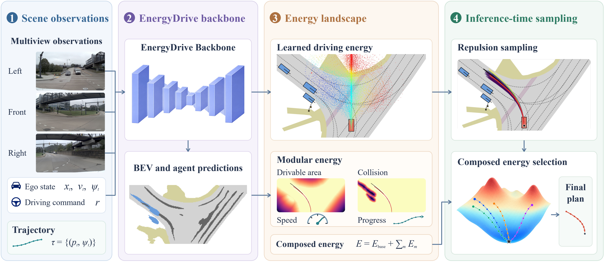
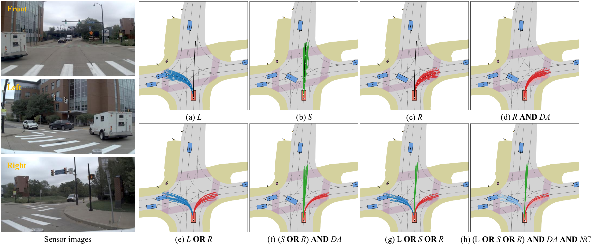
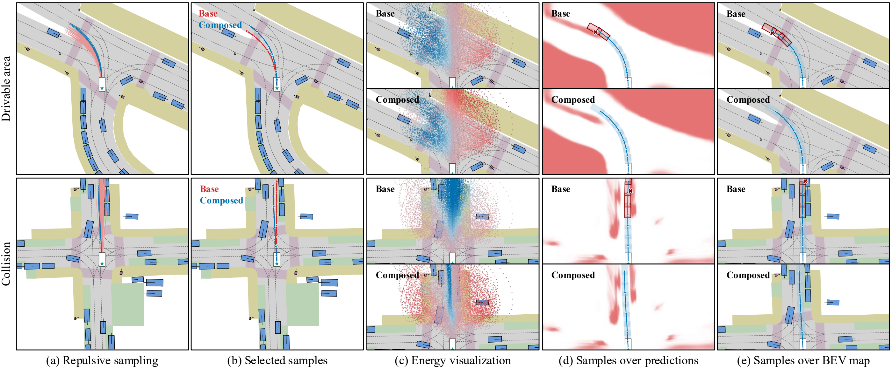
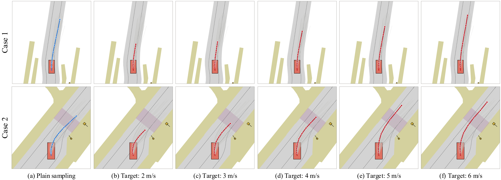
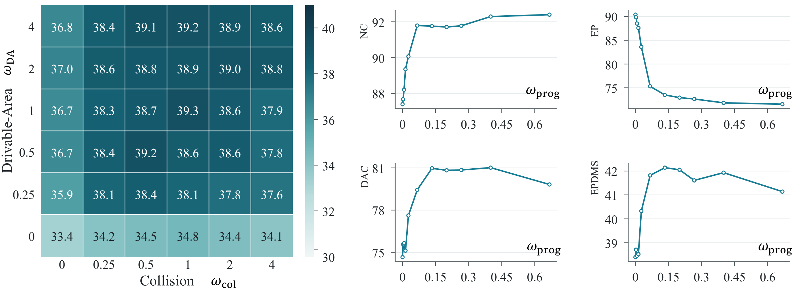

Abstract
The central goal of autonomous driving is to combine human-level driving performance with reliable decision-making under multiple safety and behavioral constraints. In this paper, we introduce EnergyDrive, an energy-based generative planning framework for end-to-end autonomous driving that supports interpretable planning, flexible sampling, and compositional control. EnergyDrive learns an explicit, scene-conditioned trajectory energy landscape from expert demonstrations, rather than time-dependent transport fields typically learned by diffusion- and flow-based generative planners. This provides a shared representation for trajectory generation and objective composition, with repulsive sampling to explore diverse driving trajectories. At inference time, the learned driving prior and modular energies for target speed, drivable-area compliance, and collision avoidance jointly define the planning objective. EnergyDrive outperforms the compared imitation-learning baselines on the NAVSIM v2 navhard and HUGSIM. Qualitative results demonstrate flexible sampling over driving behavior through energy composition. Energy landscape visualizations show the interpretability and reveal how learned preferences and individual constraints shape the resulting plans.
Method overview
Learn an explicit trajectory energy from driving demonstrations, explore it with repulsive sampling, and select a plan using composed driving objectives.


Planning performance
EnergyDrive achieves 44.2 EPDMS on NAVSIM-v2 navhard and 37.9 average HD on HUGSIM, leading the compared imitation-learning baselines.
| Method | Stage | NC ↑ | DAC ↑ | DDC ↑ | TLC ↑ | EP ↑ | TTC ↑ | LK ↑ | HC ↑ | EC ↑ | EPDMS ↑ |
|---|---|---|---|---|---|---|---|---|---|---|---|
| LTF | S1 | 96.1 | 85.3 | 99.4 | 99.3 | 84.7 | 94.7 | 93.6 | 97.6 | 77.3 | 33.7 |
| S2 | 85.5 | 66.9 | 91.6 | 99.1 | 93.0 | 81.1 | 58.3 | 95.1 | 42.9 | ||
| DiffusionDrive | S1 | 97.9 | 87.3 | 99.3 | 99.3 | 82.8 | 96.2 | 98.0 | 97.6 | 63.6 | 35.9 |
| S2 | 87.1 | 72.1 | 93.1 | 98.8 | 91.9 | 81.5 | 61.5 | 95.5 | 28.6 | ||
| MeanFuser | S1 | 97.6 | 91.8 | 99.3 | 99.3 | 84.4 | 96.7 | 96.4 | 97.6 | 80.4 | 37.8 |
| S2 | 87.2 | 67.2 | 94.4 | 98.3 | 94.0 | 79.9 | 65.9 | 95.0 | 42.6 | ||
| EnergyDrive (Ours) | S1 | 97.6 | 94.9 | 98.7 | 100.0 | 71.8 | 98.2 | 93.8 | 97.8 | 46.2 | 44.2 |
| S2 | 94.7 | 85.2 | 94.4 | 99.3 | 63.8 | 93.1 | 55.2 | 96.9 | 48.6 |
S1 / S2: the two evaluation stages. ↑ Higher is better. Tables scroll horizontally on smaller screens.
All methods use the standard NAVSIM-v2 navhard protocol. EPDMS is the overall two-stage score, not the arithmetic average of stage scores. EnergyDrive improves safety metrics, with lower ego progress (EP). The main comparison excludes separate PDM-score-supervised trajectory scorers.
| Method | NC ↑ | DAC ↑ | TTC ↑ | COM ↑ | Rc ↑ | HD-E ↑ | HD-M ↑ | HD-H ↑ | HD-X ↑ | HD Avg ↑ |
|---|---|---|---|---|---|---|---|---|---|---|
| LTF | 53.5 | 96.3 | 47.0 | 99.2 | 46.2 | 67.2 | 40.0 | 18.8 | 6.9 | 32.5 |
| DiffusionDrive | 55.1 | 96.8 | 49.3 | 98.4 | 46.3 | 69.5 | 44.8 | 15.4 | 5.7 | 33.6 |
| MeanFuser | 54.6 | 96.6 | 49.0 | 99.4 | 48.9 | 77.5 | 40.5 | 17.7 | 10.9 | 35.3 |
| EnergyDrive (Ours) | 66.9 | 97.1 | 63.3 | 85.2 | 48.2 | 72.9 | 47.4 | 18.7 | 13.9 | 37.9 |
Zero-shot transfer of NAVSIM-trained checkpoints, using the same HUGSIM protocol with controller convergence. HD is reported for easy (E), medium (M), hard (H), and extreme (X) scenarios; HD Avg is the scenario-weighted aggregate.
Additional benchmarks and inference efficiency
| Method | Inference | Params. (M) | Time (ms) ↓ | FPS ↑ | EPDMS ↑ |
|---|---|---|---|---|---|
| LTF | Default | 56.036 | 10.09 | 99.16 | 33.7 |
| DiffusionDrive | Default | 60.781 | 17.05 | 58.66 | 35.9 |
| MeanFuser | Default | 55.581 | 11.33 | 88.29 | 37.8 |
| EnergyDrive (base) | Plain | 68.377 | 68.30 | 14.64 | 34.5 |
| EnergyDrive (full) | Repulsion, K = 64 | 68.377 | 92.67 | 10.79 | 44.2 |
| EnergyDrive (full) | Vocabulary, 2,048 | 68.377 | 33.54 | 29.82 | 41.3 |
Timing uses a single NVIDIA RTX PRO 6000 GPU. The two full-model variants share the final contrastive checkpoint; the base model is trained separately. Vocabulary selection is approximately 2.76× faster than iterative sampling, with a 2.9-point EPDMS reduction.
| Method | Checkpoint | navhard ↑ | navtest ↑ | HUGSIM ↑ |
|---|---|---|---|---|
| LTF | navtest | 31.1 | 87.8 | 32.5 |
| LTF | navhard | 33.7 | 87.6 | 30.0 |
| DiffusionDrive | navtest | 34.9 | 89.4 | 33.6 |
| DiffusionDrive | navhard | 35.9 | 86.2 | 26.6 |
| EnergyDrive | Same final EMA | 44.2 | 89.1 | 37.9 |
For each baseline, the checkpoint with the higher aggregate score is selected per benchmark, and all submetrics use that checkpoint. EnergyDrive uses the same final EMA checkpoint across benchmarks. NAVSIM columns report EPDMS; HUGSIM reports average HD.
| Method | NC ↑ | DAC ↑ | DDC ↑ | TLC ↑ | EP ↑ | TTC ↑ | LK ↑ | HC ↑ | EC ↑ | EPDMS ↑ |
|---|---|---|---|---|---|---|---|---|---|---|
| LTF | 98.3 | 95.6 | 99.6 | 99.8 | 87.1 | 97.5 | 97.2 | 98.3 | 88.2 | 87.8 |
| DiffusionDrive | 98.5 | 97.1 | 99.6 | 99.8 | 87.4 | 97.8 | 98.0 | 98.3 | 87.5 | 89.4 |
| MeanFuser | 98.1 | 97.6 | 99.7 | 99.8 | 87.6 | 97.3 | 97.9 | 98.3 | 88.0 | 89.7 |
| EnergyDrive (Ours) | 97.8 | 98.3 | 99.4 | 99.8 | 86.6 | 97.2 | 96.5 | 98.3 | 86.9 | 89.1 |
Scores on navtest are closely clustered; EnergyDrive does not lead this benchmark.
| Method | Separate PDM-score-supervised scorer | Result source | EPDMS ↑ |
|---|---|---|---|
| GuideFlow (command) | No | Reported, Table 1 | 27.1 |
| GuideFlow (plan anchor) | No | Reported, Table 4 | 29.0 |
| EnergyDrive (Ours) | No | Our evaluation | 44.2 |
| GuideFlow+Scorer | Yes | Reported, Table 1 | 43.0 |
| GuideFlow+Scorer† | Yes | Reported, Table 1 | 46.7 |
GuideFlow values are paper-reported results from Liu et al. (2026b), arXiv:2511.18729v3, Tables 1 and 4; they were not re-evaluated here. Training data and inference settings are not matched. The scorer-augmented variants use GTRS-Dense; † denotes an adjusted trajectory-scoring strategy. EnergyDrive exceeds the listed no-scorer configurations, but not the adjusted-scoring variant at 46.7. See Appendix C.5 of the paper for the comparison scope.
Flexible inference through composition
The same model represents alternative maneuvers and shared driving requirements through explicit energy functions.


Interpretable trajectory selection


Target-speed control without retraining


Ablations and sensitivity
Modular objectives and contrastive training provide complementary improvements on NAVSIM-v2 navhard.
| Configuration | Contrast. | Collision | DA | Progress | NC ↑ (S1 / S2) | DAC ↑ (S1 / S2) | EPDMS ↑ |
|---|---|---|---|---|---|---|---|
| Base | — | — | — | — | 96.6 / 85.6 | 86.7 / 70.3 | 34.5 |
| + Collision | — | ✓ | — | — | 98.7 / 88.5 | 84.9 / 67.4 | 34.8 |
| + DA | — | — | ✓ | — | 96.6 / 85.3 | 92.9 / 75.3 | 36.7 |
| + Collision + DA | — | ✓ | ✓ | — | 98.2 / 88.7 | 91.8 / 73.9 | 39.3 |
| + Collision + DA + progress | — | ✓ | ✓ | ✓ | 98.1 / 91.7 | 93.3 / 80.6 | 42.1 |
| + Contrastive + collision + DA | ✓ | ✓ | ✓ | — | 97.8 / 89.4 | 91.3 / 75.8 | 40.2 |
| + Contrastive + all energies | ✓ | ✓ | ✓ | ✓ | 97.6 / 94.7 | 94.9 / 85.2 | 44.2 |
NC and DAC are reported as Stage 1 / Stage 2. “All energies” means collision, drivable-area, and progress energies. The base model is trained without contrastive learning.
Energy-composition weights

